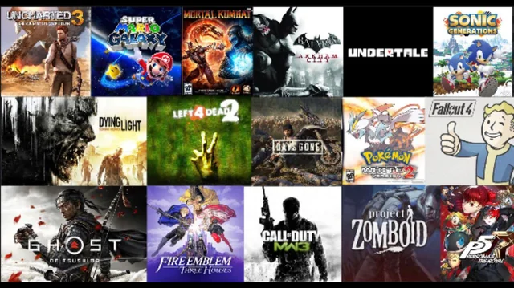

Updated: January 2026
PC gaming in 2026 has balance: the AAA studios push tech and spectacle, while indies deliver fresh mechanics and emotional surprises. Below are the top 10 PC games you should consider — listed with why they matter, who will love them, and whether to pre-order or wait for post-launch patches.
How we picked these
We prioritized: technical polish, critical early buzz, design ambition, and long-term play value. Recommendations are platform-focused for PC (mod support, controller compatibility, and performance scaling).
Top 10 PC Games — Quick List
- Legends of Asteria — Massive open-world action-RPG (best for players who love exploration & deep systems)
- Project Titanfall: Reclaimed — Large-scale mech combat & narrative (best for scale-lovers and competitive players)
- Neon Noir Detective — Narrative mystery with branching outcomes (best for story-driven players)
- Paper Oceans — Handcrafted puzzle-adventure (indie, artistic, excellent for chill sessions)
- Skyforge: Reborn — Revamped live-service MMORPG (best for social players & long-term engagement)
- Rivals of the Void — Competitive arena shooter with ranked ladder (eSports-ready)
- Lanterns of the Fallen — Melancholic action RPG with exploration focus
- Neon Drift: Outskirts — Street-racing experience with RPG elements
- Tiny Colony — Cozy colony sim (perfect for quick, system-driven play)
- Clockwork Canticle — Rhythm-powered roguelite (great for inventive mechanics)
Deep dive: The top picks (1–4)
1. Legends of Asteria
Why it matters: sprawling world design, emergent quests, and a flexible combat system that rewards experimentation. The game promises day/night cycles that alter enemy behavior and faction alliances that matter long-term.
Recommended for: open-world lovers, streamers, and completionists. Pre-order? Wait a week — the first patch usually lands fast for big open-world launches.
2. Project Titanfall: Reclaimed
Why it matters: ambitious vehicle-to-foot soldier sandbox combat, destructible environments in multiplayer, and a cinematic single-player campaign. Performance scales well on modern GPUs but benefits from high VRAM for texture packs.
Recommended for: shooter fans who value spectacle & multiplayer depth. Pre-order? Only if you want the deluxe skins; otherwise wait for early patch reports.
3. Neon Noir Detective
Why it matters: a tightly written investigative game with branching cases, where your choices have meaningful outcomes. The mood, voice acting, and atmospheric city design are its biggest appeal.
Recommended for: players who love narrative complexity. Pre-order? No — story games are best experienced after reviews to avoid spoilers and bugs.
4. Paper Oceans
Why it matters: a striking indie with a clever physics engine and handcrafted levels. Short, intensely creative — ideal for folks who appreciate design-first experiences.
Recommended for: indie fans & players who value craft. Pre-order? Often unnecessary for indies — wait for the launch reaction.
5–7: Midlist worth playing
5. Skyforge: Reborn
Why it matters: long-term engagement with refined endgame systems and better matchmaking. If you like returning to a persistent world with a fixed friends list, this one delivers.
6. Rivals of the Void
Why it matters: tight arena design, high-skill ceiling, and a growing competitive scene. Great spectator value — expect streamer-driven growth.
7. Lanterns of the Fallen
Why it matters: a contemplative action-RPG that trades grind for discovery, with a soundscape that elevates exploration moments.
8–10: The niche & cozy picks
8. Neon Drift: Outskirts
Why it matters: crafted urban districts and short, punchy driving events that reward skill more than grinding. Excellent mod potential on PC.
9. Tiny Colony
Why it matters: gentle systems, meaningful encounters, and a cozy pace. Great for players who want systems but not burnout.
10. Clockwork Canticle
Why it matters: unique fusion of rhythm mechanics and roguelite progression. Each run feels musically distinct.
Final verdict & buying advice
If you want one quick takeaway: pick Legends of Asteria for scale, Neon Noir Detective for story, and Paper Oceans if you want something artful and compact. For multiplayer longevity, Skyforge: Reborn and Rivals of the Void are safe bets.
Pro tip: PC launches change fast — keep an eye on day-one patches and community hubs for real-time fixes and optimization tips.